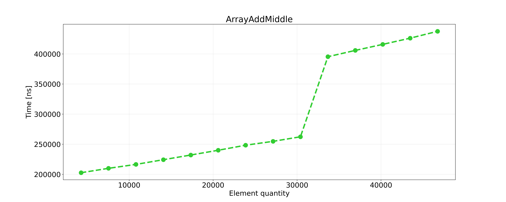
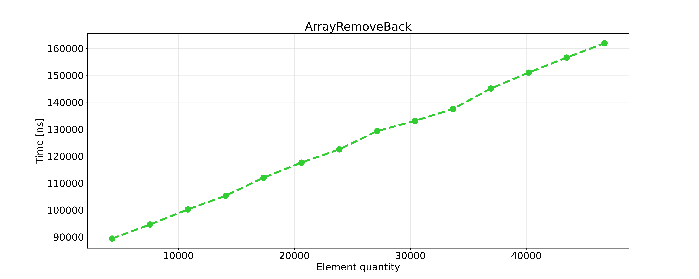
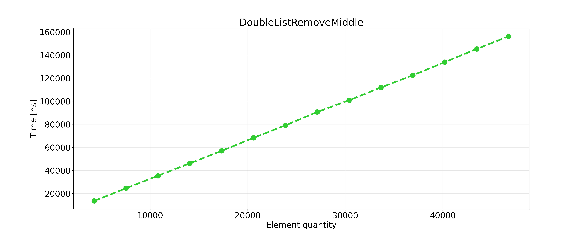
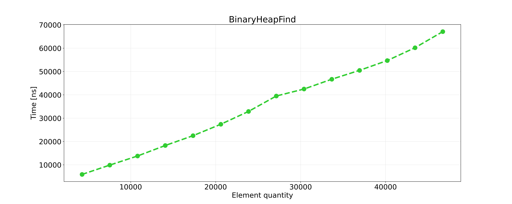
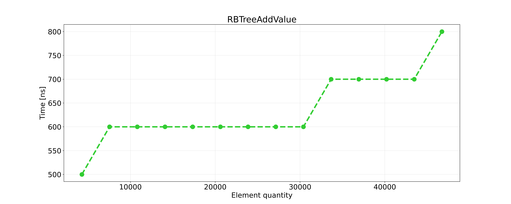

| Wydział Elektroniki | Kierunek: Informatyka Techniczna |
|---|---|
| Grupa zajęciowa Wt 15:15 | Semestr: 2020/2021 Lato |
| Prowadzący: | Dr inż. Dariusz Banasiak |
| Autor |
|---|
| Byczko Maciej |
Zadanie projektowym było napisanie programu i zmierzenie czasu wykonywania działań na:
Działania wykonywane na powyższych strukturach były następujące:
Złożoność obliczeniowa jest nam potrzebna aby określić ilość zasobów potrzebnych do rozwiązania problemu obliczeniowego. Rozważanymi zasobami są głównie:
| Funkcja | Średnia | Pesymistyczna |
|---|---|---|
| Dodawanie | $O(n)$ | $O(n)$ |
| Usuwanie | $O(n)$ | $O(n)$ |
| Znajdowanie | $O(n)$ | $O(n)$ |
| Funkcja | Średnia | Pesymistyczna |
|---|---|---|
| Dodawanie | $O(-)$ | $O(n)$ |
| Usuwanie | $O(-)$ | $O(n)$ |
| Znajdowanie | $O(n)$ | $O(n)$ |
| Funkcja | Średnia | Pesymistyczna |
|---|---|---|
| Dodawanie | $O(1)$ | $O(1)$ |
| Usuwanie | $O(1)$ | $O(1)$ |
| Znajdowanie | $O(n)$ | $O(n)$ |
| Funkcja | Średnia | Pesymistyczna |
|---|---|---|
| Dodawanie | $O(/log(n))$ | $O(/log(n))$ |
| Usuwanie | $O(/log(n))$ | $O(/log(n))$ |
| Znajdowanie | $O(/log(n))$ | $O(/log(n))$ |
std::chrono::high_resolution_clockPomiar czasowe były mierzone w nanosekundach $(1 [ns] = 1 * 10^9 [s])$ za pomocą następującej funkcji:
template<typename T>
double Timer(T i) {
auto start = chrono::high_resolution_clock::now();// Start the counter
i();// our function
auto end = chrono::high_resolution_clock::now();// Get value after executing function
auto duration = end - start;// get time difference
auto elapsed_time = chrono::duration_cast<chrono::nanoseconds> (duration).count();// calculate time
return elapsed_time;// Return executing time in nanoseconds
}
| Liczba danych | Dodawanie na początek | Dodawanie na koniec | Dodawanie gdziekolwiek | Usuwanie początek | Usuwanie koniec | Usuwanie gdziekolwiek | Szukanie | |
|---|---|---|---|---|---|---|---|---|
| L.p. | j | $[ns]$ | $[ns]$ | $[ns]$ | $[ns]$ | $[ns]$ | $[ns]$ | $[ns]$ |
| 1 | 5000 | 14200 | 13400 | 208300 | 10200 | 92700 | 175800 | 6200 |
| 2 | 10000 | 24800 | 21000 | 219700 | 18300 | 103700 | 185800 | 12100 |
| 3 | 15000 | 33400 | 28100 | 231200 | 27000 | 109600 | 196600 | 18900 |
| 4 | 20000 | 41100 | 37200 | 240300 | 34700 | 118300 | 203400 | 26600 |
| 5 | 25000 | 46900 | 44700 | 251800 | 43000 | 126300 | 215500 | 35300 |
| 6 | 30000 | 55100 | 52000 | 266200 | 51700 | 135300 | 266100 | 45200 |
| 7 | 35000 | 62200 | 60200 | 395640 | 59600 | 142800 | 360100 | 58000 |
| 8 | 40000 | 72800 | 68600 | 413800 | 67500 | 150900 | 376100 | 76000 |
| 9 | 45000 | 82000 | 76400 | 428800 | 75800 | 189700 | 389200 | 117400 |





Czas wykonywania operacji wzrastał wraz z ilością elementów w tablicy, więc czas potrzebny na dodawanie, usuwanie bądź znajdowanie elementu zależy od wielkości tej struktury. Wykresy są w większości funkcją liniową.
| Liczba danych | Dodawanie na początek | Dodawanie na koniec | Dodawanie gdziekolwiek | Usuwanie początek | Usuwanie koniec | Usuwanie gdziekolwiek | Szukanie | |
|---|---|---|---|---|---|---|---|---|
| L.p. | j | $[ns]$ | $[ns]$ | $[ns]$ | $[ns]$ | $[ns]$ | $[ns]$ | $[ns]$ |
| 1 | 5000 | 300 | 21100 | 19500 | 100 | 400 | 19400 | 200 |
| 2 | 10000 | 300 | 43940 | 36900 | 100 | 400 | 36000 | 3800 |
| 3 | 15000 | 400 | 65660 | 52900 | 100 | 400 | 52800 | 3900 |
| 4 | 20000 | 400 | 88800 | 70800 | 100 | 400 | 69400 | 20480 |
| 5 | 25000 | 400 | 112700 | 86500 | 100 | 400 | 85800 | 55700 |
| 6 | 30000 | 400 | 141100 | 100500 | 100 | 400 | 02000 | 99200 |
| 7 | 35000 | 400 | 156400 | 117000 | 100 | 400 | 18900 | 156300 |
| 8 | 40000 | 400 | 180700 | 133100 | 100 | 400 | 35900 | 216000 |
| 9 | 45000 | 400 | 198900 | 149800 | 100 | 500 | 55900 | 277400 |




coś tu będzie.
| Liczba danych | Dodawanie | Usuwanie | Szukanie | |
|---|---|---|---|---|
| L.p. | j | $[ns]$ | $[ns]$ | $[ns]$ |
| 1 | 5000 | 11600 | 44800 | 7900 |
| 2 | 10000 | 20400 | 49100 | 14000 |
| 3 | 15000 | 27500 | 55000 | 20300 |
| 4 | 20000 | 35200 | 61400 | 27300 |
| 5 | 25000 | 42900 | 67600 | 36000 |
| 6 | 30000 | 51700 | 75400 | 43000 |
| 7 | 35000 | 59200 | 90300 | 48200 |
| 8 | 40000 | 67700 | 105100 | 54800 |
| 9 | 45000 | 76600 | 125400 | 63200 |



| Liczba danych | Dodawanie | Usuwanie | Szukanie | |
|---|---|---|---|---|
| L.p. | j | $[ns]$ | $[ns]$ | $[ns]$ |
| 1 | 5000 | 500 | 400 | 300 |
| 2 | 10000 | 600 | 400 | 400 |
| 3 | 15000 | 600 | 400 | 400 |
| 4 | 20000 | 600 | 500 | 400 |
| 5 | 25000 | 600 | 500 | 400 |
| 6 | 30000 | 700 | 600 | 400 |
| 7 | 35000 | 700 | 600 | 400 |
| 8 | 40000 | 700 | 700 | 500 |
| 9 | 45000 | 800 | 700 | 500 |



Coś tu będzie.
| Liczba danych | Dodawanie | Usuwanie | Szukanie | |
|---|---|---|---|---|
| L.p. | j | $[ns]$ | $[ns]$ | $[ns]$ |
| 1 | 5000 | 400 | 600 | 400 |
| 2 | 10000 | 500 | 700 | 400 |
| 3 | 15000 | 500 | 700 | 400 |
| 4 | 20000 | 600 | 800 | 400 |
| 5 | 25000 | 700 | 900 | 500 |
| 6 | 30000 | 700 | 900 | 500 |
| 7 | 35000 | 700 | 1000 | 500 |
| 8 | 40000 | 800 | 1100 | 600 |
| 9 | 45000 | 800 | 1200 | 700 |

Coś tu będzie.
Tutaj musi coś być.